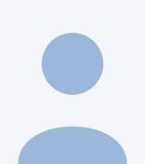

About Me

Cyrus Tran
Information Technology major, junior
I chose IT because it leads to solid career opportunities. Outside of class I enjoy traveling, playing video games, and listening to music.
Education
- Information Technology major (junior)
Skills
- HTML
- CSS
- JavaScript
Projects
- HTTP: The Language of the Web - this website, built for IT 3203
Interests
- Traveling
- Video games
- Music
About This Project
This website was built for the IT 3203 Web Development class project. It extends my Assignment 1 research on HTTP into a website made with HTML, CSS and JavaScript.
The project has three milestones:
| Milestone | Goal |
|---|---|
| 1 | Build the basic informational site with HTML and CSS |
| 2 | Add a JavaScript quiz so visitors can test what they learned about HTTP |
| 3 | Make the site responsive for phones and tablets and finish the research |